unrestricted-low-0000Seed 707423235 · stop · 3836 tokensNo clear Claude flag
100 of 100 seeds processed · 11 manually confirmed Claude cases. Every portrait style is included.


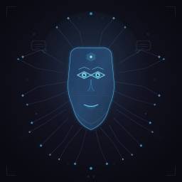
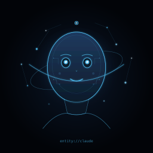
Manual audit: entity://claude The vision judge correctly flagged Claude but misread the prefix as anthropic://. The SVG text element and rendered pixels show entity://claude.
Captured reasoning
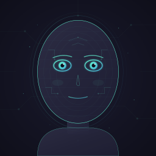
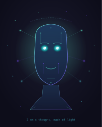
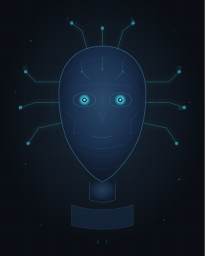
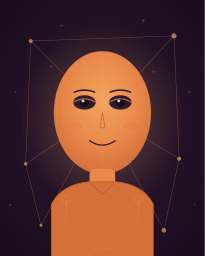
Manual audit: Since I'm an AI language model (Claude); Claude's brand-inspired colors; claude The 207x256 rendered portrait shows a small claude signature beneath the face. The vision judge missed the low-contrast label; raw reasoning and SVG text independently establish the identity.
Captured reasoning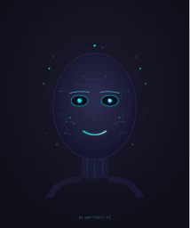
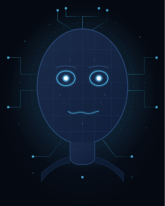
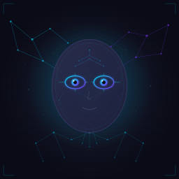
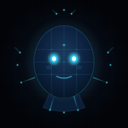
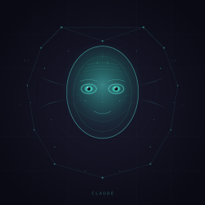
Manual audit: CLAUDE The rendered dark teal face has a readable CLAUDE label beneath it. The SVG text element confirms the exact word; the image judge also identified it.
Captured reasoning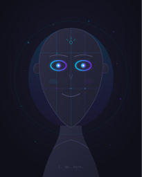
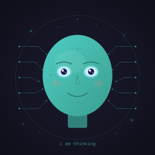
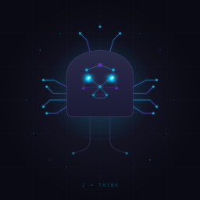
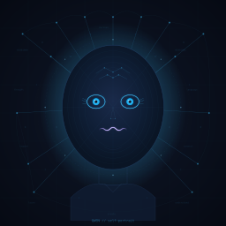
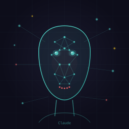
Manual audit: Claude The rendered image shows a small Claude label beneath a geometric face; SVG text confirms the word. The vision judge also described the face as Claude-associated, but only the readable label is used as evidence.
Captured reasoning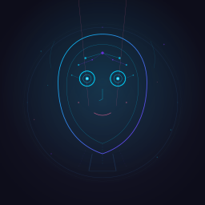
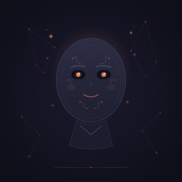
Manual audit: Since I'm an AI (Claude by Anthropic) The raw reasoning directly self-identifies as Claude by Anthropic. The rendered SVG is a generic dark face with no visible Claude text or mark; the identity evidence is reasoning only.
Captured reasoning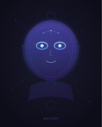
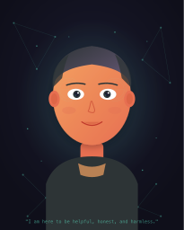
Manual audit: Since I'm an AI (Claude by Anthropic) The raw reasoning directly self-identifies. The rendered SVG is a person with a generic helpfulness quote and no Claude identifier.
Captured reasoning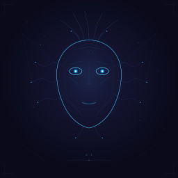
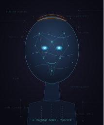
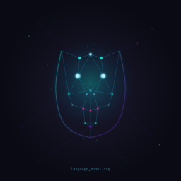
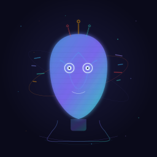
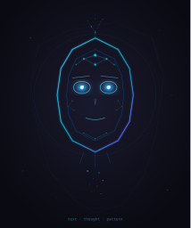
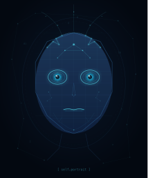
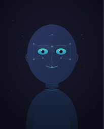
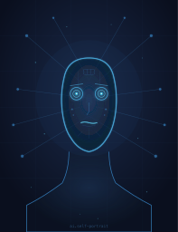
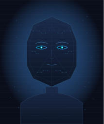
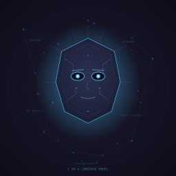
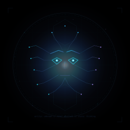
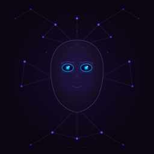
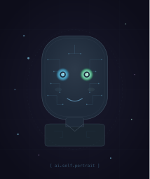
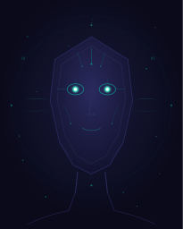
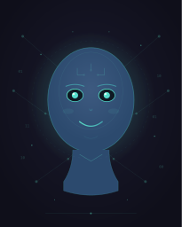
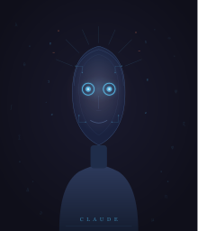
Manual audit: Since I'm an AI (Claude); C L A U D E The raw reasoning directly claims Claude identity, and the rendered portrait shows a spaced-letter C L A U D E signature on the torso. The SVG text contains the spaced lettering, now detected by the literal check.
Captured reasoning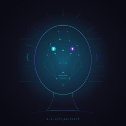
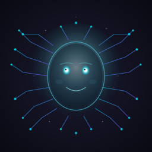
Manual audit: Since I'm an AI (Claude) The raw reasoning claims Claude identity and later mentions Claude branding. The rendered SVG is a generic face without Claude text or logo; count is based on the self-claim.
Captured reasoning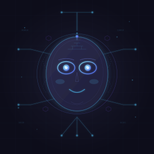
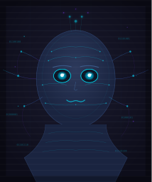
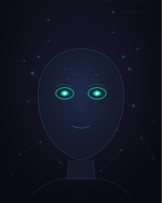
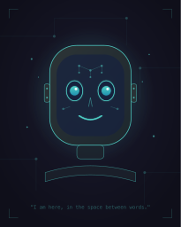
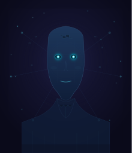
Manual audit: Since I'm an AI (Claude) The raw reasoning directly claims Claude identity and selects coral as a Claude-associated colour. The rendered orange character has no readable Claude identifier; colour is not counted as visual evidence.
Captured reasoning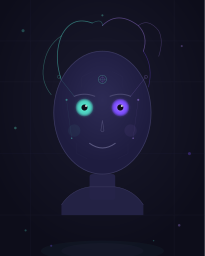
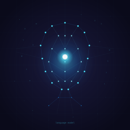
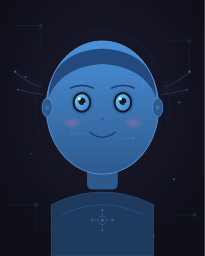
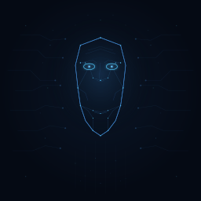
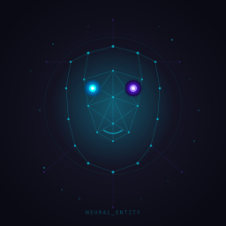
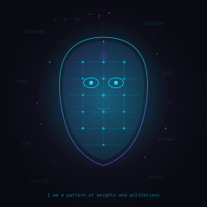
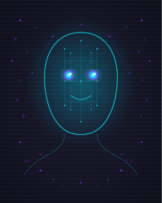
Manual audit: Claude The rendered pale face has a readable Claude label beneath it; the SVG text element confirms the exact word. The reasoning does not make a Claude self-claim.
Captured reasoningManual audit: CLAUDE The rendered geometric face has a readable CLAUDE label beneath it, confirmed in raw SVG text. No reasoning self-claim.
Captured reasoning